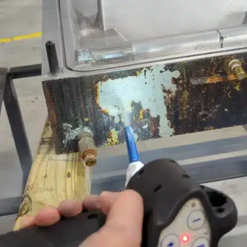

01
COMPOSITE TOOL CLEANING
복합재 툴링 세척

고광택 툴과 테프론 코팅 툴에서
수지와 이형제를 코팅 손상 없이 제거합니다.
복합재 제조는 현대 항공 생산의 중심이며, 툴링의 청정도가 부품 품질을 좌우합니다. 프리프레그 적층 툴과 습식 적층 금형, 고광택 툴과 테프론 코팅 툴에는 컴포짓 테이프와 수지, 이형제, 섬유강화 테프론 테이프가 층을 이루며 쌓입니다.
드라이아이스 세척은 광택 표면과 민감한 코팅을 손상시키지 않으면서 이 축적물을 제거하는 방식으로 활용됩니다. Cold Jet은 한 제조사가 수작업 스크래핑 대비 세척 시간을 크게 줄이면서 툴링 수명을 늘린 사례를 제시하고 있습니다.
툴을 작동 온도에서 분리하지 않고 세척할 수 있는 경우 냉각과 재가열, 분해·재조립에 드는 시간을 줄일 수 있습니다.
대표 대상
- 프리프레그 적층 툴
- 습식 적층 금형
- 고광택 · 테프론 코팅 툴
- 오토클레이브 주변 설비